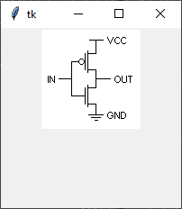
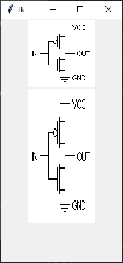
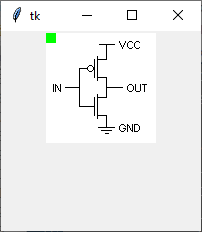
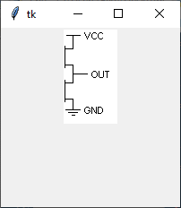
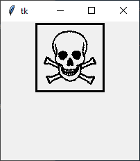

Bilder mit PhotoImage
Bilder im Format GIF, PNG und PPM/PGM
Ein PhotoImage erzeugen
img = tk.PhotoImage(name=None, optionen)
| Optionsname | Beschreibung |
|---|---|
| data | Die Bilddaten als String |
| format | Name des Formats, wenn die Daten per
data übergeben wurden |
| file | Dateiname der Bilddatei |
| gamma | Gamma-Wert zur Farbkorrektur |
| height, width | Größe des angezeigten Bildes, 0 (default)
bedeutet: die originale Bildgröße. Es wird lediglich ein Ausschnitt des Bildes
angezeigt, das Bild wird nicht gezoomt oder gekachelt |
| palette | Angabe der Auflösung in durch "/" (Schrägstriche) nach Farben getrennter Form |
Das folgende Programm stellt ein PhotoImage in einem Label vor:
import tkinter as tk
from tkinter import ttk
class A(tk.Tk):
def __init__(self):
super().__init__()
self.geometry('200x200')
self._createWidgets()
def _createWidgets(self):
self.img = tk.PhotoImage(file="test.png")
label = ttk.Label(image=self.img)
label.pack()
if __name__ == '__main__':
window = A()
window.mainloop()PhotoImage-Methoden
| Methode | Parameter | Rückgabewert | Beschreibung |
|---|---|---|---|
| img.blank() | - | - | Entfernt alle Bilddaten, das Bild wird vollständig transparent |
| img.copy() | - | PhotoImage | Kopiert Das Image |
| img.data(…) | Zur Zeit nicht unterstützt | ||
| img.get(x, y) | x, y: Bildpunkt | 3-Tupel | Farbinformation (RGB) am Bildpunkt |
| img.height(), img.width() | - | Ganze Zahl | aktuelle Größe des Bildes |
| img.put(data, to) | data: Farbcodes als Liste der Form {red #ff0000 …}, to ist eine Position oder ein Rechteck | - | Färbt Teile einer Zeile oder ein Rechteck des Bildes ein |
| img.read(…) | Zur Zeit nicht unterstützt | ||
| img.redither(…) | Zur Zeit nicht unterstützt | ||
| img.subsample(x, y) | x, y: Pixel zum Überspringen (jedes x-te Pixel). Ist y nicht angegeben, dann ist y=x | PhotoImage | Gibt ein neues PhotoImage zurück, bei dem nur jeder x-te und y-te Bildpunkt berücksichtigt wird. Das Bild wird auf diese Weise verkleinert. |
| img.transparency_get(x, y) | x, y: Bildpunkt | True, wenn das Bild am Bildpunkt transparent ist | Liefert die Transparenz an einem Bildpunkt als Boolean |
| img.transparency_set(x, y, value) | x, y: Bildpunkt, value: True, wenn der Bildpunkt transparent sein soll | - | Setzt die Transparenz für einen Bildpunkt |
| img.type() | - | 'photo' oder 'bitmap' | Liefert den Typ des Bildes als String |
| img.write(filename, format=None, from_coords=None) | Dateiname, Formatangaben, from_coords: Position oder Rechteck: (x1, y1, x2, y2) | - | Schreibt das Bild in eine Datei. Bild kann dabei beschnitten werden: Entweder von einer Koordinate bis in die untere rechte Ecke oder ein Rechteck wird angegeben. |
| img.zoom(x, y) | x, y: Zoomfaktoren. Ist y nicht angegeben, dann ist y=x | PhotoImage | Gibt ein gezoomtes PhotoImage zurück |
Dazu werden die Konfigurationsmethoden: cget(…) und configure(…) unterstützt.
Das folgende Programm zeigt ein gezoomtes PhotoImage:
import tkinter as tk
from tkinter import ttk
class A(tk.Tk):
def __init__(self):
super().__init__()
self.geometry('200x400')
self._createWidgets()
def _createWidgets(self):
self.img = tk.PhotoImage(file='test.png')
self.img2 = self.img.zoom(1, 2)
label = ttk.Label(image=self.img)
label.pack()
label2 = ttk.Label(image=self.img2)
label2.pack()
if __name__ == '__main__':
window = A()
window.mainloop()Das folgende Programm färbt ein Rechteck ein:
import tkinter as tk
from tkinter import ttk
class A(tk.Tk):
def __init__(self):
super().__init__()
self.geometry('200x200')
self._createWidgets()
def _createWidgets(self):
self.img = tk.PhotoImage(file='test.png')
self.img.put("{#00ff00}", to=(0, 0, 10, 10))
label = ttk.Label(image=self.img)
label.pack()
if __name__ == '__main__':
window = A()
window.mainloop()Das folgende Programm speichert eine Bilddatei in einer anderen Datei ab, das Bild wird dabei beschnitten:
import tkinter as tk
from tkinter import ttk
class A(tk.Tk):
def __init__(self):
super().__init__()
self.geometry('200x200')
self._createWidgets()
def _createWidgets(self):
self.img = tk.PhotoImage(file='test.png')
self.img.write('test2.png', from_coords=(50, 5))
self.img2 = tk.PhotoImage(file='test2.png')
label = ttk.Label(image=self.img2)
label.pack()
if __name__ == '__main__':
window = A()
window.mainloop()Bilder mit BitmapImage
Bilder im zweifarbigen Format XBM, bei dem ein Bildpunkt entweder gesetzt oder nicht gsetzt ist.
Ein BitmapImage erzeugen
img = tk.BitmapImage(name=None, optionen)
| Optionsname | Beschreibung |
|---|---|
| background | Hintergrundfarbe |
| data | Bilddaten als String im XBM-Format |
| file | Dateiname der Bilddatei im XBM-Format |
| foreground | Vordergrundfarbe |
| maskdata | Bildmaske |
| maskfile | Bildmaske als Datei, muss ebenfalls im XBM-Format vorliegen |
Das folgende Programm stellt ein BitmapImage in einem Label vor:
import tkinter as tk
from tkinter import ttk
class A(tk.Tk):
def __init__(self):
super().__init__()
self.geometry('200x200')
self._createWidgets()
def _createWidgets(self):
self.img = tk.BitmapImage(file='test.xbm')
label = ttk.Label(image=self.img)
label.pack()
if __name__ == '__main__':
window = A()
window.mainloop()Bilder mit PIL
PIL/Pillow ist eine Grafikbibliothek, mit der man Bilder manipulieren kann. Es können Bilder in sehr vielen pixelbasierten Grafikformaten geladen werden, diese Bilder lassen sich anzeigen, man kann in ihnen malen, sie transformieren, und in anderen Formaten ausgeben.
Bilder mit PIL darstellen
img = ImageTk.PhotoImage(image=None, size=None, optionen)
Die Klasse ImageTk.PhotoImage kann als Ersatz für die entsprechenden
PhotoImage- und BitmapImage-Klassen in Tkinter angesehen werden.
Es kann mit dem Parameter image ein anderes Image dargestellt werden, mit
file kann eine Datei geladen werden.
Das folgende Programm lädt entsprechend einem früheren Beispiel ein Bild:
import tkinter as tk
from tkinter import ttk
from PIL import Image, ImageDraw, ImageTk
class A(tk.Tk):
def __init__(self):
super().__init__()
self.geometry('200x200')
self._createWidgets()
def _createWidgets(self):
self.img = ImageTk.PhotoImage(file='test.png')
label = ttk.Label(image=self.img)
label.pack()
if __name__ == '__main__':
window = A()
window.mainloop()Folgendes Beispiel erzeugt ein Mandelbrot-Fraktal. Es wird dazu mit Image.new(…) ein
PIL-Image erzeugt. Dieses Image wird mit ImageTk.PhotoImage(…) in ein kompatibles
tkinter-Image eingebunden. Dieses PhotoImage kann nun in einem Canvas oder anderem Widget
dargestellt werden.
Damit man auf dem Image malen kann, muss der Umweg über ein drawImage genanntes
Image vom Typ ImageDraw.Draw(…) gegangen werden.
""" Mandelbrot """
import tkinter as tk
from tkinter import ttk
from PIL import Image, ImageDraw, ImageTk
class Mandelbrot(tk.Tk):
def __init__(self, width, height):
super().__init__()
self.width = width
self.height = height
self.geometry('400x400')
self.title('Mandelbrot')
# config for rows, columns
self.rowconfigure(0, weight=10)
self.rowconfigure(1, weight=0)
self.columnconfigure(0, weight=10)
self.columnconfigure(1, weight=0)
# canvas
self.canvas = tk.Canvas(
self, bd=1, relief=tk.SUNKEN, width=200, height=200,
scrollregion=(0, 0, self.width, self.height),
background='white')
self.canvas.grid(column=0, row=0, sticky=tk.E+tk.W+tk.N+tk.S)
# scrollbars for canvas
scrollH = ttk.Scrollbar(self, orient=tk.HORIZONTAL,
command=self.canvas.xview)
scrollH.grid(column=0, row=1, sticky=tk.E+tk.W)
scrollV = ttk.Scrollbar(self, orient=tk.VERTICAL,
command=self.canvas.yview)
scrollV.grid(column=1, row=0, sticky=tk.N+tk.S)
self.canvas['xscrollcommand'] = scrollH.set
self.canvas['yscrollcommand'] = scrollV.set
#
# run
self.image = Image.new('RGB', (self.width, self.height))
self.photoImage = ImageTk.PhotoImage(self.image)
self.drawImage = ImageDraw.Draw(self.image)
self.canvas.create_image(0, 0,
anchor=tk.NW,
image=self.photoImage)
# calculate region of image
self.scaleXMin = int(self.width * 3 // 4)
self.scaleXMax = self.width - self.scaleXMin
self.scaleXDivider = self.scaleXMax
self.scaleYMin = int(self.height // 2)
self.scaleYMax = self.scaleYMin
self.scaleYDivider = self.scaleYMax // 2
self.makeIteration()
def mandelbrotIteration(self, x, y, count):
z0 = complex(0, 0)
c = complex(x, y)
for n in range(0, count):
z = z0 * z0 + c
z0 = z
if abs(z) > 10:
return n
return count
def plotPixel(self, x, y, value):
v = 255 - value * 20 # rgb color value
color = (v, v, v) # set color to grey mode
self.drawImage.point((x+self.scaleXMin, y+self.scaleYMin),
fill=color)
def makeIteration(self):
for x in range(-self.scaleXMin, self.scaleXMax+1):
for y in range(-self.scaleYMin, self.scaleYMax+1):
xi = x / self.scaleXDivider
yi = y / self.scaleYDivider
count = self.mandelbrotIteration(xi, yi, 10)
self.plotPixel(x, y, count)
self.photoImage.paste(self.image)
if __name__ == '__main__':
app = Mandelbrot(500, 500)
app.mainloop()Sonstige Image-Funktionen
- image_names(): Listet die bekannten Bildnamen auf. Ein Bildname ist beispielsweise der erste Parameter vom PhotoImage- oder BitmapImage-Konstruktor
- image_types(): Listet die verfügbaren Typen von Imageklassen in tk auf:
('photo', 'bitmap')
Referenzen
Siehe Auch
- BitmapImage: https://www.tcl.tk/man/tcl8.7/TkCmd/bitmap.html
- PhotoImage: https://www.tcl.tk/man/tcl8.7/TkCmd/photo.html
- https://github.com/python/cpython/blob/main/Lib/tkinter/__init__.py
- Bild, Schaltkreis: https://upload.wikimedia.org/wikipedia/commons/5/51/Static_CMOS_Inverter.png
- Installation PIL/Pillow unter diversen Betriebssystemen: https://blog.finxter.com/python-install-pil/
- Dokumentation PIL/Pillow (Python Image Library): https://pillow.readthedocs.io/en/stable/
- Von PIL/Pillow unterstützte Dateiformate: https://pillow.readthedocs.io/en/stable/handbook/image-file-formats.html